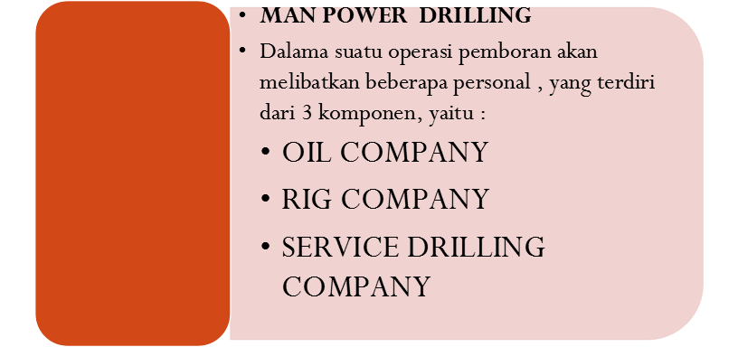
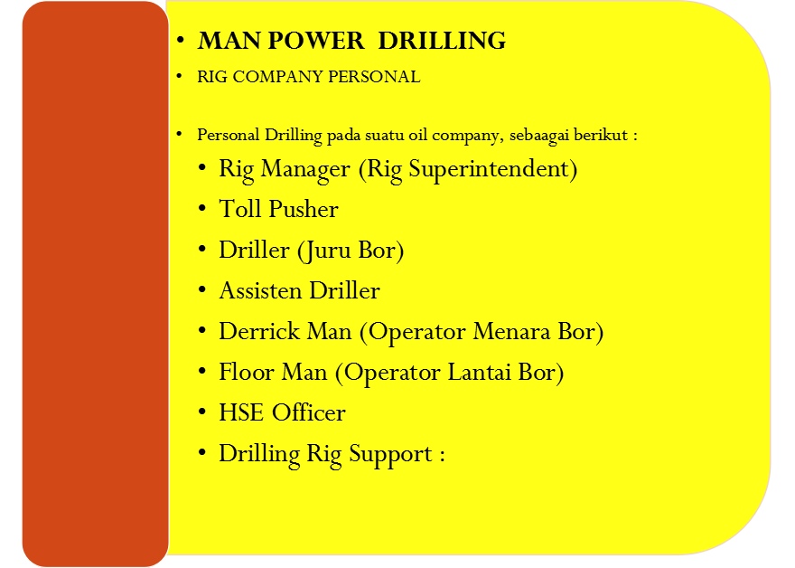
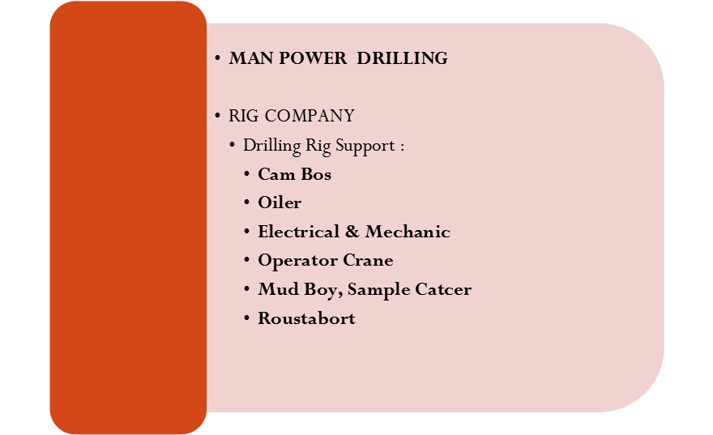
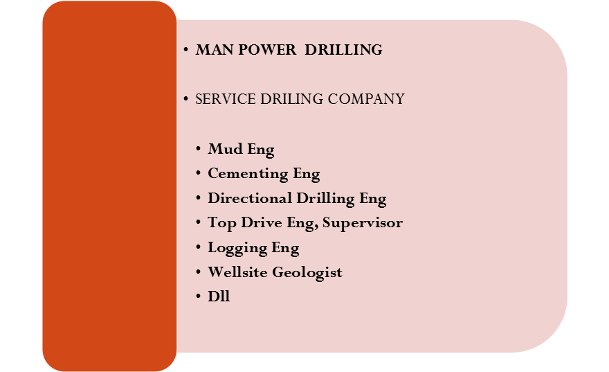

Materi Minggu Ini
- Struktur organisasi oil company dalam operasi pemboran
- Peran rig company (kontraktor rig) dan susunan krunya
- Service drilling company: mud, cementing, wireline, dan lainnya
- Pembagian tanggung jawab dan koordinasi antar pihak
Penjelasan Materi
Oil Company
Oil company adalah perusahaan minyak dan gas bumi pemilik lapangan yang akan dibor. Struktur personel drilling pada oil company umumnya terdiri dari: Drilling Manager, Senior Drilling Engineer, Junior Drilling Engineer, Well Planner, Drilling Contract Management and Support, Logistic Drilling, Drilling Specialist, Drilling Superintendent, dan Drilling Supervisor (Company Man).
Rig Company
Rig company adalah perusahaan penyedia jasa penyewaan rig beserta personelnya, misalnya PDSI (Pertamina Drilling Service), Bormindo, Apexindo, dan Radian Utama. Di Indonesia, kontraktor rig tergabung dalam APMI (Asosiasi Pemboran Minyak dan Gas Indonesia), yang turut menentukan harga sewa rig agar tercipta persaingan sehat. Biaya sewa rig sudah mencakup biaya personel rig.
Service Drilling Company
Service drilling company menyediakan jasa pendukung operasi pemboran, seperti service lumpur, semen, logging system, core dan log, directional drilling, top drive system, hingga well testing. Di lapangan biasanya dipimpin oleh engineer senior, supervisor, dan operator, serta turut menyewakan peralatan tambahan (pompa semen, alat DD, alat logging, dsb). Contoh perusahaan service ini antara lain Halliburton, Schlumberger, Elnusa, Baker, dan Amerada.
Gambar & Ilustrasi
Diambil langsung dari slide PPT Chapter 5.



